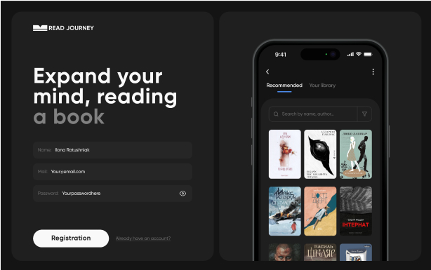
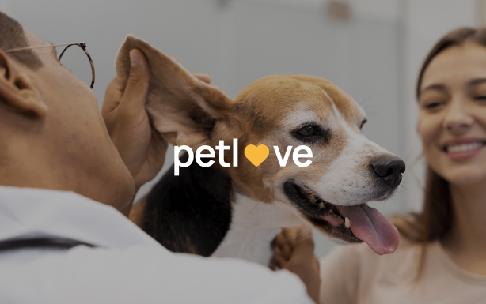
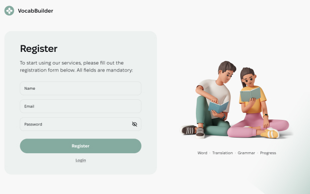

<!--<section class="projects">-->
<!--  <div class="container">-->
<!--    &lt;!&ndash; title &ndash;&gt;-->
<!--    <h3 class="projects-title">PROJECTS</h3>-->
<!--    &lt;!&ndash; list tech &ndash;&gt;-->
<!--    <div class="projects-sections">-->
<!--      <div class="projects-top-section">-->
<!--        <ul class="projects-technologies-list">-->
<!--          <li class="projects-technologies-list-item">#react</li>-->
<!--          <li class="projects-technologies-list-item">#js</li>-->
<!--          <li class="projects-technologies-list-item">#node js</li>-->
<!--          <li class="projects-technologies-list-item">#git</li>-->
<!--        </ul>-->
<!--        &lt;!&ndash; text &ndash;&gt;-->
<!--        <p class="projects-text">Programming Across Borders: Ideas, Technologies, Innovations</p>-->
<!--        &lt;!&ndash; btn see project &ndash;&gt;-->
<!--        <a class="projects-btn" href="">See project</a>-->
<!--      </div>-->
<!--      &lt;!&ndash; img list &ndash;&gt;-->
<!--      <div class="projects-bottom-section">-->
<!--        &lt;!&ndash; Slider main container ====================================&ndash;&gt;-->
<!--        <div class="swiper-projects">-->
<!--          &lt;!&ndash; Additional required wrapper &ndash;&gt;-->
<!--          <div class="swiper-wrapper-projects">-->
<!--            &lt;!&ndash; Slides &ndash;&gt;-->
<!--            <div class="swiper-slide-projects projects-img-item">-->
<!--              <picture>-->
<!--                <source srcset="./img/projects/1-pc-x1.jpg 1x,-->
<!--                              ./img/projects/1-pc-x2.jpg 2x " media="(min-width: 1440px)" />-->
<!--                <source srcset="./img/projects/1-tablet-x1.jpg 1x,-->
<!--                              ./img/projects/1-tablet-x2.jpg 2x" media="(min-width: 768px)" />-->
<!--                <source srcset="./img/projects/1-mobile-x1.jpg 1x,-->
<!--                              ./img/projects/1-mobile-x2.jpg 2x" media="(max-width: 767px)" />-->
<!--                -->
<!--              </picture>-->
<!--            </div>-->
<!--            <div class="swiper-slide-projects">-->
<!--              &lt;!&ndash; <picture>-->
<!--                <source srcset="./img/projects/2-pc-x1.jpg 1x,-->
<!--                              ./img/projects/2-pc-x2.jpg 2x " media="(min-width: 1440px)" />-->
<!--                <source srcset="./img/projects/2-tablet-x1.jpg 1x,-->
<!--                              ./img/projects/2-tablet-x2.jpg 2x" media="(min-width: 768px)" />-->
<!--                <source srcset="./img/projects/2-mobile-x1.jpg 1x,-->
<!--                              ./img/projects/2-mobile-x2.jpg 2x" media="(max-width: 767px)" />-->
<!--                -->
<!--              </picture> &ndash;&gt;-->
<!--            </div>-->
<!--            <div class="swiper-slide-projects">-->
<!--              &lt;!&ndash; <picture>-->
<!--                <source srcset="./img/projects/3-pc-x1.jpg 1x,-->
<!--                              ./img/projects/3-pc-x2.jpg 2x " media="(min-width: 1440px)" />-->
<!--                <source srcset="./img/projects/3-tablet-x1.jpg 1x,-->
<!--                              ./img/projects/3-tablet-x2.jpg 2x" media="(min-width: 768px)" />-->
<!--                <source srcset="./img/projects/3-mobile-x1.jpg 1x,-->
<!--                              ./img/projects/3-mobile-x2.jpg 2x" media="(max-width: 767px)" />-->
<!--                -->
<!--              </picture> &ndash;&gt;-->
<!--            </div>-->
<!--          </div>-->

<!--          &lt;!&ndash; navigation buttons &ndash;&gt;-->
<!--          <div class="swiper-button-prev-projects">-->
<!--            <button class="projects-left-btn arrows-btn" type="button">-->
<!--              <svg class="projects-left-btn-icon btn-icon" aria-label="swipe left icon">-->
<!--                <use href="./sprites/symbol-defs.svg#icon-arrow-left"></use>-->
<!--              </svg>-->
<!--            </button>-->
<!--          </div>-->
<!--          <div class="swiper-button-next-projects">-->
<!--            <button class="projects-right-btn arrows-btn" type="button">-->
<!--              <svg class="projects-right-btn-icon btn-icon" aria-label="swipe right icon">-->
<!--                <use href="./sprites/symbol-defs.svg#icon-arrow-right"></use>-->
<!--              </svg>-->
<!--            </button>-->
<!--          </div>-->
<!--        </div>-->
<!--        &lt;!&ndash; ==================================== &ndash;&gt;-->
<!--      </div>-->
<!--    </div>-->
<!--    &lt;!&ndash;=======================================  &ndash;&gt;-->

<!--  </div>-->
<!--</section>-->
<!--=======-->
<!--	<div class="container">-->
<!--		&lt;!&ndash; title &ndash;&gt;-->
<!--		<h3 class="projects-title">PROJECTS</h3>-->
<!--		&lt;!&ndash; list tech &ndash;&gt;-->
<!--		<div class="projects-top-section">-->
<!--			<ul class="projects-technologies-list">-->
<!--				<li class="projects-technologies-list-item">#react</li>-->
<!--				<li class="projects-technologies-list-item">#js</li>-->
<!--				<li class="projects-technologies-list-item">#node js</li>-->
<!--				<li class="projects-technologies-list-item">#git</li>-->
<!--			</ul>-->
<!--			&lt;!&ndash; text &ndash;&gt;-->
<!--			<p class="projects-text">Programming Across Borders: Ideas, Technologies, Innovations</p>-->
<!--			&lt;!&ndash; btn see project &ndash;&gt;-->
<!--			<a class="projects-btn" href="">See project</a>-->
<!--		</div>-->
<!--		&lt;!&ndash; img list &ndash;&gt;-->
<!--		<div class="projects-bottom-section">-->
<!--			<ul class="projects-img-list">-->
<!--				<li class="projects-img-item">-->
<!--					<picture>-->
<!--						<source srcset="../img/projects/1-pc-x1.jpg 1x,-->
<!--          ../img/projects/1-pc-x2.jpg 2x " media="(min-width: 1440px)" />-->
<!--						<source srcset="../img/projects/1-tablet-x1.jpg 1x,-->
<!--          ../img/projects/1-tablet-x2.jpg 2x" media="(min-width: 768px)" />-->
<!--						<source srcset="../img/projects/1-mobile-x1.jpg 1x,-->
<!--          ../img/projects/1-mobile-x2.jpg 2x" media="(max-width: 767px)" />-->
<!--						-->
<!--					</picture>-->
<!--				</li>-->
<!--				<li class="projects-img-item">-->
<!--					<picture>-->
<!--						<source srcset="../img/projects/2-pc-x1.jpg 1x,-->
<!--                    ../img/projects/2-pc-x2.jpg 2x " media="(min-width: 1440px)" />-->
<!--						<source srcset="../img/projects/2-tablet-x1.jpg 1x,-->
<!--                    ../img/projects/2-tablet-x2.jpg 2x" media="(min-width: 768px)" />-->
<!--						<source srcset="../img/projects/2-mobile-x1.jpg 1x,-->
<!--                    ../img/projects/2-mobile-x2.jpg 2x" media="(max-width: 767px)" />-->
<!--						-->
<!--					</picture>-->
<!--				</li>-->
<!--				<li class="projects-img-item">-->
<!--					<picture>-->
<!--						<source srcset="../img/projects/3-pc-x1.jpg 1x,-->
<!--                                ../img/projects/3-pc-x2.jpg 2x " media="(min-width: 1440px)" />-->
<!--						<source srcset="../img/projects/3-tablet-x1.jpg 1x,-->
<!--                                ../img/projects/3-tablet-x2.jpg 2x" media="(min-width: 768px)" />-->
<!--						<source srcset="../img/projects/3-mobile-x1.jpg 1x,-->
<!--                                ../img/projects/3-mobile-x2.jpg 2x" media="(max-width: 767px)" />-->
<!--						-->
<!--					</picture>-->
<!--				</li>-->
<!--			</ul>-->
<!--		</div>-->
<!--		&lt;!&ndash; <swiper-container> &ndash;&gt;-->
<!--		&lt;!&ndash; shadow &ndash;&gt;-->
<!--		&lt;!&ndash; <div class="swiper">-->
<!--                <div class="swiper-wrapper">-->
<!--                  <slot />-->
<!--                </div>-->
<!--              </div>-->
<!--            </swiper-container> &ndash;&gt;-->
<!--		&lt;!&ndash; arrows &ndash;&gt;-->
<!--		&lt;!&ndash; <div class="swiper-button-prev"></div>-->
<!--      <div class="swiper-button-next"></div> &ndash;&gt;-->

<!--		<div class="projects-arrows-box">-->
<!--			<button class="projects-left-btn arrows-btn" type="button">-->
<!--				<svg class="projects-left-btn-icon btn-icon" aria-label="swipe left icon">-->
<!--					<use href="./sprites/symbol-defs.svg#icon-arrow-left"></use>-->
<!--				</svg>-->
<!--			</button>-->
<!--			<button class="projects-right-btn arrows-btn" type="button">-->
<!--				<svg class="projects-right-btn-icon btn-icon" aria-label="swipe right icon">-->
<!--					<use href="./sprites/symbol-defs.svg#icon-arrow-right"></use>-->
<!--				</svg>-->
<!--			</button>-->
<!--		</div>-->

<!--	</div>-->
<!--</section>-->
<!--&lt;!&ndash;Projects&ndash;&gt;-->

<!--&lt;!&ndash;Текст “Projects” є заголовком секції.&ndash;&gt;-->

<!--&lt;!&ndash;Перелік проєктів та опису до них необхідно реалізувати за допомогою <ul> у вигляді горизонтального слайдера (https://swiperjs.com/swiper-api). Користувач повинен мати змогу взаємодіяти зі слайдером через мишу, клавіатуру (клавіш Tab та стрілок) або сенсорний екран. У разі досягнення кінця списку елементів, кнопка відповідно до вказаного напрямку повинна бути задізейблена (користувач більше не може взаємодіяти з нею, і вона не реагує на події clickу або натискання клавіші). Задізейблена кнопка візуальною змінюється, що підкреслює її неактивний стан.&ndash;&gt;-->

<!--&lt;!&ndash;Зображення потрібно реалізувати як контенті.&ndash;&gt;-->

<!--&lt;!&ndash;Посилання "See project" має відкривати проєкт команди, розміщений на GitHub, у новій вкладці.&ndash;&gt;-->